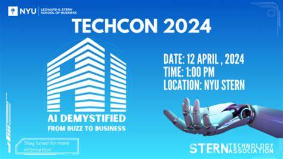

History of TechCon
TechCon began in 2005 as a small gathering of tech enthusiasts and has since grown into a globally recognized event attended by leaders and innovators in technology. The conference has become an important platform for discussing the latest advancements and shaping the future of the tech industry.
TechCon has hosted numerous notable speakers and has featured a wide range of topics,

This image shows the poster for TechCon2024 happening in San Diego.
Notable Speakers
Jane Doe

Jane Doe is a renowned tech entrepreneur and innovator, known for her contributions to artificial intelligence. She delivered a keynote speech at TechCon 2020, inspiring many with her groundbreaking research and entrepreneurial journey.
John Smith

John Smith is a leading expert in cybersecurity and data privacy. At TechCon 2019, he shared insights on the future of cybersecurity and how businesses can better protect themselves from digital threats.